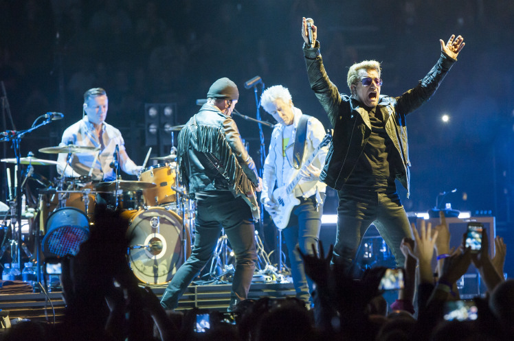
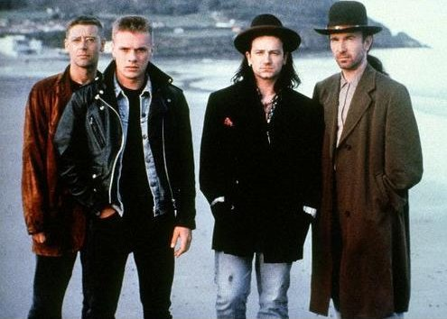

Чтобы стать настоящим ирландцем Вам нужно посетить Дублин, посетить паб в Дублине и посетить концерт группы U2, можно и не в Дублине. U2 – музыкальный символ Ирландии. U2- cамая популярная группа Ирландии всех времен и народов, ведь число проданных альбомов и концертных солдаутов давно уже достигло каких-то космических высот. Сегодня в Настоящем Ирландце мы расскажем вам о Боно и компании. Ларри Маллен, когда ему было 14 лет, повесил на школьной доске объявлений короткую записку: «Drummer seeks musicians to form band.». На прослушивание, состоявшееся в кухне Малленов, пришло семеро подростков из которых, помимо самого Маллена остались, Адам Клейтон бас-гитара, Дейв Эванс и Пол Хьюсон, более известные как Эдж и Боно.  В середине 80-х музыканты уже стали профессионалами, выпустили 4 альбома, успешно гастролировали и обрели армию поклонников. Настоящими звездами музыканты стали в 1987 году после выхода величайшей рок-пластинки «The Joshua Tree». В легендарном диске - виртуозная игра на гитаре Эджа, потрясающий голос Боно и глубокий смысл текстов - именно это и пленило фанатов. С момента основания группы, парни из Дублина выработали и поддерживали уникальный звук с акцентом на мелодичности, что частично является результатом влияния продюсера Стива Лиллиуайта в тот момент, когда о группе еще никто не знал. Несмотря на это, с каждым новым альбомом U2 приносили что-то новое в свою музыку. Начав с пост-панка и простого звука на альбомах «Boy» и «October», их звучание через «War» превратилось в более многогранный и агрессивный звук с элементами рок-псалмов, фанка и танцевальной музыки. Журнал Rolling Stone охарактеризовал два альбома «мускулистыми и напористыми»: «The Unforgettable Fire», в котором Эдж больше играет на клавишах, чем на гитаре, и «The Joshua Tree», на который большое влияние оказали Брайан Ино и Даниэль Лануа. В песнях из The Joshua Tree и Rattle and Hum наблюдается больший акцент на внушенный Лануа ритм, таким образом они смешали различные стили американского блюза и госпела. В 90-х U2 обновились, начав использовать в «Pop» и «Achtung Baby» синтезаторы и электронные ритмы, позаимствованные из альтернативной и танцевальной музыки. В 2000-х U2 вернулись к более простому звуку с меньшим использованием синтезаторов и эффектов и более традиционному ритму.  Основой песен U2 являются общественные и политические вопросы. Sunday Bloody Sunday и Mothers of the Disappeared основаны на реальных событиях. Более того, личные конфликты Боно и проблемы, связанные с семьей, нашли отражение в песнях Mofo, Tomorrow и Kite. Тоска, томление, ожидание чуда также являются частыми темами песен, как, например, в песнях Yahweh и Please. Чувство утраты, тоски, но и надежды на лучшее, преобладающие в The Joshua Tree, послужило основой многих произведений U2. В опубликованном журналом Rolling Stone в 2004 году списке пятисот лучших песен эпохи рок-н-ролла присутствуют следующие песни группы: One, I Still Haven’t Found What I’m Looking For, With or Without You, Sunday Bloody Sunday, Pride (In the Name of Love) и New Year’s Day. Кстати, именно композицию With or Without You ирландских рокеров чаще других перепевает музыканты по всему миру. Поэтому и ты можешь представить нам свою версию With or Without You и отправиться в Дублин на свой сольный концерт. Запиши кавер, сними это на видео, опубликуй в ютьюб, а ссылку пришли на irishtrue.vgorode.ua и выиграй Рокстар Уикенд в столице Ирландии.
конкурс